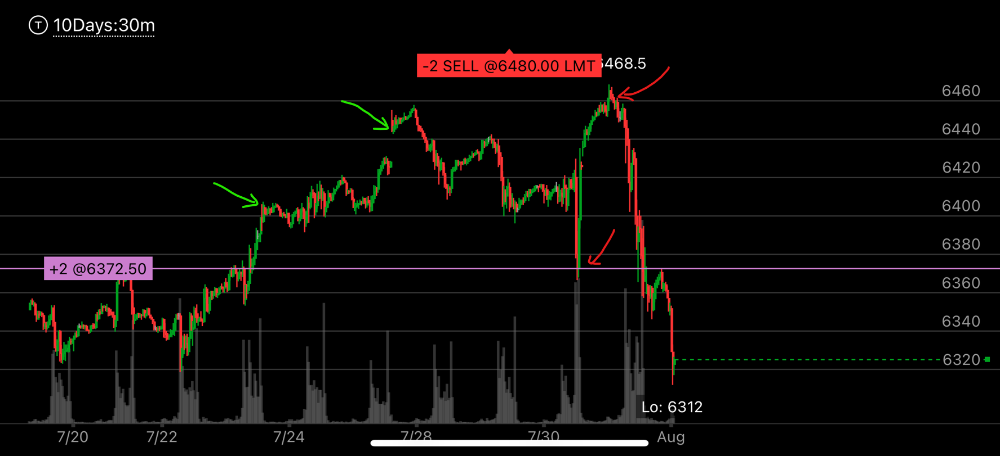

没有加速，超买加上相对弱势产生的大幅回撤
- 如果大盘出现了超买或者超卖， 但是并没有出现加速动作，但是出现了相对弱势，这时常常会大幅回调，
- 这种大幅回调，也不需要加速来结束，而是用相对弱势来结束
- 这种模式经常发生，但是它不是反转模式。

图示:
- 第一个红色箭头，大盘出现了超买，它创新高后，没有回调，反而涨的更多。
- 第一个红色箭头以及第二个红色箭头之间，时间很短，没有任何相对走势，第二个红色箭头就创新高
- 两个红色箭头，上涨相对弱势，但是没有明显的加速动作，第二个高点只比第一个高点高很少的一点点。但是要比第二个高点下落的慢很多。
- 两个绿色箭头，下跌的时候出现了超卖。它下跌后，没有明显的反弹，再次创新低。


图示:
- 重点看第二张图。第一张是20天走势
- 从20天走势，可以看出大盘超买了，需要一个契机形成相对弱势而大幅回调。 整个大盘处于升势。这个回调只是为最后的冲刺做准备
- 第一个红色非常尖锐，然后创新高，这个新高不是整个新高，而是走势内部新高，真的新高还有50点。 这时，可以预料，大盘一定会再次低于前面的低点
，也就是低于第一个红色尖锐点，然后才涨，这时已经距离新高很近了。
- 看第三张图，第三个绿箭头是底部，这个出现了加速下跌，这里才是底部，这时可以买call，它顶部出现了相对弱势，而底部出现了加速下跌，可以说，非常肯定的走势。 只要call时间足够
可以获利，当然要买比较近比较贵的call，不然很难获利。
图示:
- 蓝色箭头代表超买了，而且这时已经越过了5700点，这个点是上次加速的位置。
- 红色箭头出现了加速走势，但是这个走势没有出现跨越，它只是在自己范围内跨越。但是加速本身已经说明了它快要反转了
- 黄色箭头代表相对弱势，它前面下跌很快，而这里创了新高，下跌很慢，形成相对弱势
- 两个绿色箭头，代表了它似乎在下跌出现了加速，但是，它还没有大跌，所以这个不是最后阶段， 而且他在前面已经酝酿了很久
从时间上看，并没有加速

图示:
- 两个红色箭头，表示创新高后，走平后，没有拉回，继续上涨。这样就出现了超买。
- 它拉回后，只拉回到第一个红色箭头附近，而且没有出现两段走势，这样，超买就没有被化解，它再创新高。
- 但是要注意，它的新高没有加速。而且很快低于第二个红色箭头，说明它没有跨越，而是回到了范围。 这样，它就具备了大跌的基础
- 它随后震荡好几天，但是一直在绿色箭头上面。这说明它会大幅下跌。绿色箭头是上一个新高的拉回点，这样就积累了很大的动能
- 而紫色箭头，代表了它未来会下跌的幅度，至少低于这个点。这个紫色箭头的高度接近新高。它在底部迅速拉回，说明它不是底部。
也就是说，未来会低于紫色。高于新高。可以做空，然后等待足够时间，做多。
同一个走势，15分钟和30分钟分析

图示:
- 第一个绿色箭头，创新高后，它走平，并没有下跌。然后继续冲高，第二个绿色箭头，再次走平，这时大盘已经超买了。
- 第一个红色箭头，它快速下跌，在底部停留1个小时后，快速上涨，创新高。但是这个新高非常的勉强，然后很快跌回范围之内
- 这个新高不是加速走势，虽然它看起来加速了。但是幅度太小，而且很快低于原来的范围，并没有跨越。
- 一旦跌回范围内，说明大盘已经具备了动能要下跌，而且一定低于第一个红色箭头
- 这个不能简单的抄底，而是要等待时间，并且看到大盘出现超卖或者底部信号。

图示:
- 这个是同一个图，只是15分钟分辨率
- 黄色箭头标识第一个高点，第一个绿色箭头是在底部，很快反弹。其实它在底部也停留了一个小时，时间也不算很短了。
- 第二个绿色箭头，是加速创新高。这个新高很勉强，然后下跌,立刻低于黄色箭头的范围，说明它没有跨越，已经打算开始下跌了。